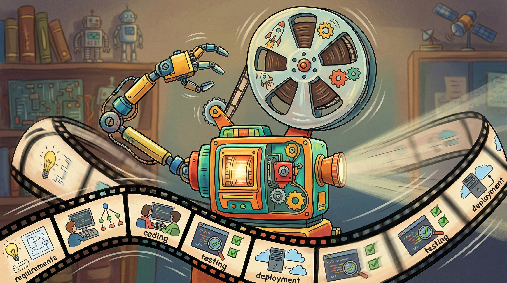

The problem with most AI products is not that they use AI. It is that they use AI to solve problems that did not need solving, or solve real problems in ways that create new, worse problems.
Raj Raghavan, Former Head of AI Product, StripeFinding the right AI problem requires all three disciplines working in parallel: AI PM synthesizes market signals, user pain points, and strategic priorities to identify which problems are worth solving; Vibe-Coding rapidly prototypes AI-assisted versions of current workflows to discover where AI actually helps versus where it creates friction; AI Engineering evaluates technical feasibility, estimates infrastructure requirements, and identifies integration challenges that might make a problem unsolvable within constraints.

Use vibe coding to probe workflows before committing to problem definitions. Rapidly prototype AI-assisted versions of current workflows to discover where AI actually helps versus where it adds friction. Vibe coding lets you experience workflow bottlenecks firsthand, helping you identify which problems genuinely warrant AI solutions rather than forcing AI onto problems that simpler tools could solve.
Learning Objectives
- Apply problem-first thinking to avoid tech-first traps
- Decompose problems into AI-appropriate units
- Map workflows and identify friction points and AI intervention points
- Apply leverage point analysis for prioritization
- Recognize when not to use AI
Chapter Overview
Finding problems worth solving with AI requires distinguishing between problems that AI can address effectively and problems where AI creates more complexity than it resolves. This chapter covers problem-first versus tech-first thinking, task decomposition methods, workflow analysis using the Jobs-to-be-Done framework, identifying leverage points for AI intervention, and knowing when simpler solutions win.
We will examine two running examples throughout this chapter. QuickShip is a logistics startup exploring AI opportunities in package routing. HealthMetrics is a healthcare analytics company seeking AI use cases for hospital operations. These examples ground abstract frameworks in concrete product decisions.
Four Questions This Chapter Answers
- What are we trying to learn? Which problems are genuinely worth solving with AI versus which can be solved more effectively with simpler approaches.
- What is the fastest prototype that could teach it? A problem decomposition exercise mapping your team's top candidate AI use case to AI-appropriate task units.
- What would count as success or failure? A clear framework for distinguishing high-leverage AI opportunities from low-value complexity, including explicit kill criteria for bad ideas.
- What engineering consequence follows from the result? Problem-first thinking prevents the tech-first trap that leads teams to build impressive AI solutions to problems nobody had.
Prerequisites
This chapter builds on foundational concepts from earlier chapters. You should be familiar with:
- Chapter 1: AI Capabilities and Limitations for understanding what AI can and cannot do reliably
- Chapter 2: The Synergy Triangle Framework for human-AI collaboration patterns
Role-Specific Lenses
Product managers must resist the seductive pull of technology-first thinking. The most successful AI products solve genuine user problems that happen to be AI-solvable. PMs who master problem identification frameworks avoid investing in solutions looking for problems and instead find high-impact opportunities that justify AI complexity and cost.
Designers bring crucial perspective to problem identification through user research and empathy. Understanding where AI adds value helps designers advocate for users against technology-driven feature requests and identify friction points that product teams may overlook.
Engineers often spot AI opportunities first because they understand technical feasibility. However, technical feasibility is the wrong starting point. Engineers who learn to think problem-first build AI products with higher impact because they focus on user needs rather than technical elegance.
Strategic investment in AI requires disciplined opportunity identification. Leaders who understand leverage point analysis and kill criteria avoid costly missteps and build portfolios of AI initiatives that compound rather than fragment.
Sections in This Chapter
- 5.1 Problem-First vs Tech-First Why starting with technology leads to weak products and problem decomposition methods
- 5.2 Task Decomposition for AI Breaking problems into AI-appropriate units and identifying where AI adds value
- 5.3 Workflow Analysis and Jobs-to-be-Done Mapping current workflows, identifying friction points, finding AI intervention points
- 5.4 Identifying Leverage Points High-frequency vs high-impact tasks, bottleneck analysis, quick wins vs strategic investments
- 5.5 When Not to Use AI Cost-quality trade-offs, regulatory constraints, trust requirements, simpler solutions